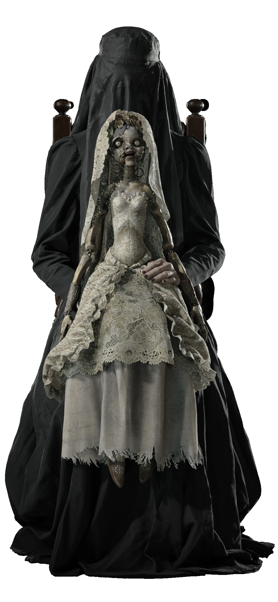
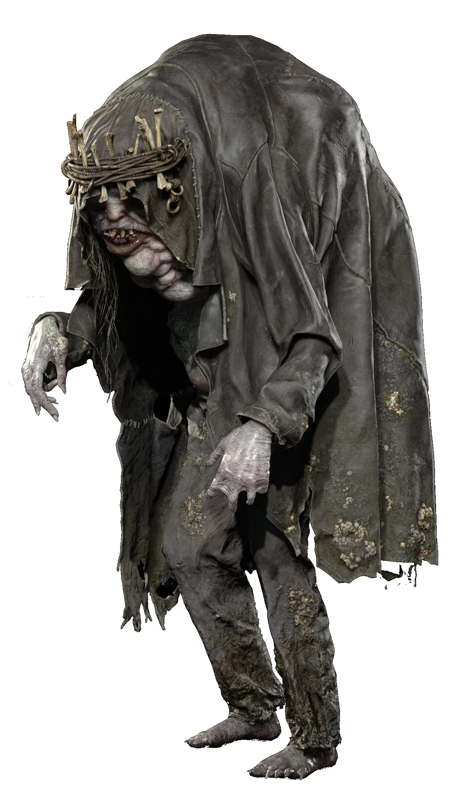
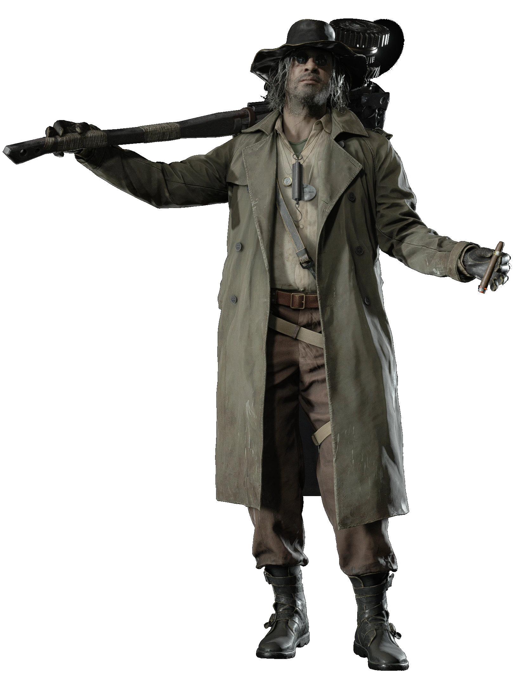

Appearance: 9-foot-tall vampire noblewoman
Location: Castle Dimitrescu
Abilities: Regenerative healing, claws, transforms into a dragon-like creature.

Donna Beneviento
Appearance: Silent dollmaker with a creepy puppet named Angie
Location: House Beneviento
Abilities: Hallucinogenic spores that cause visions
Inspiration: Psychological horror / grief and madness

Salvatore Moreau
Appearance: Disfigured, mutated fish-like man
Location: Reservoir area
Abilities: Controls acidic slime, transforms into a giant fish monster
Inspiration: Tragic monster / creature horror

Karl Heisenberg
Role: Veteran BSAA operative.
Background: Known from earlier Resident Evil games.
Twist: Initially appears as an antagonist but is revealed to be helping in secret.
Mother Miranda
Appearance: Scruffy inventor with a giant hammer
Location: Heisenberg’s Factory
Abilities: Controls magnetism and metal
Inspiration: Frankenstein’s monster meets industrial horror